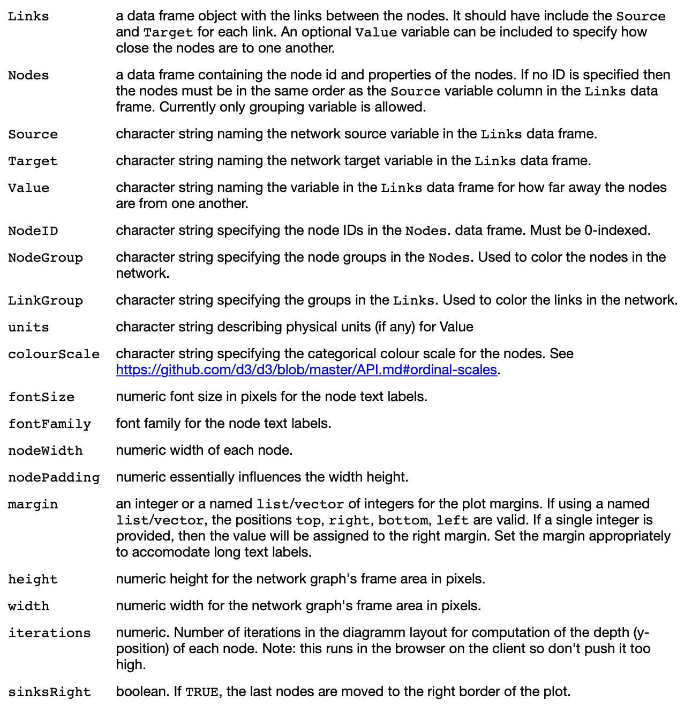
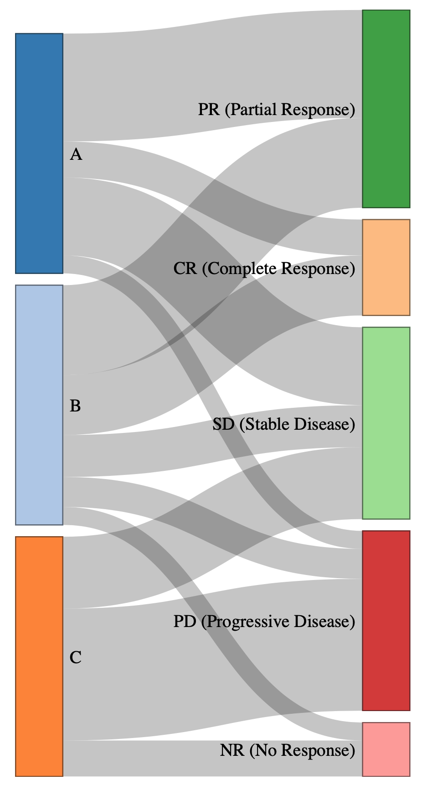

library(networkD3)
sankeyNetwork(Links, Nodes, Source, Target, Value, NodeID, NodeGroup = NodeID,
LinkGroup = NULL, units = "",
colourScale = JS("d3.scaleOrdinal(d3.schemeCategory20);"), fontSize = 7,
fontFamily = NULL, nodeWidth = 15, nodePadding = 10, margin = NULL,
height = NULL, width = NULL, iterations = 32, sinksRight = TRUE)I. Sankey Plot이란?
Sankey Plot은 데이터의 흐름이나 분포를 시각적으로 표현하는 그래프다.
선(링크)의 굵기로 양 또는 비율을 보여주며, 한 집단에서 다른 집단으로 얼마나 이동했는지를 한눈에 확인할 수 있게 도와 전체적인 구조와 흐름을 직관적으로 이해할 수 있도록 한다.
텍스트를 추가하려고 했더니…
R에는 sankeyNetwork() 함수로 Sankey Plot을 생성할 수 있는 기능이 존재한다. 이 함수는 networkD3 패키지에서 제공되며, 비교적 간단한 코드로 노드와 링크 데이터를 연결해 Sankey Plot을 만들 수 있다는 장점이 있다 (특히 마우스 오버 시 강조되거나, 노드를 드래그할 수 있는 등의 동작은 시각적으로 유용하다).
하지만 이 함수만으로는 각 링크 위에 텍스트를 추가하거나, 노드 옆에 퍼센트 또는 샘플 수(n=) 같은 세부 정보를 표시하는 것이 어렵다. 그 이유는 Sankey Plot 내부 요소들의 위치(x, y 좌표)가 JavaScript에서 실시간으로 계산되기 때문이다. 따라서 R에서는 그 위치 정보를 직접 참조하거나 조작할 수가 없어 sankeyNetwork()를 이용한 기본적인 시각화 요소 외에는 커스터마이징 옵션이 제한적이다.
따라서 Sankey Plot의 시각적 완성도를 높이기 위해서는 결국 R 코드와 JavaScript를 함께 사용하는 접근이 요구된다.
II. onRender() 소개
본 글에서 활용할 onRender()는 R에서 만든 시각화 객체에 JavaScript 코드를 직접 삽입할 수 있도록 도와주는 함수이다. 이 함수는 htmlwidgets 패키지에서 제공되며, networkD3, plotly, leaflet 등 다양한 시각화 패키지와 함께 사용된다.
onRender()를 통해 JavaScript를 삽입하면 그래프 내부의 구성 요소들을 세부적으로 수정할 수 있다. 이 함수는 Sankey 그래프가 완성된 이후 실행되기 때문에, 그래프가 브라우저에 나타난 상태에서 DOM 요소를 선택해 조작하는 것을 가능하게 한다. 즉, onRender()는 R에서 만든 시각화 객체를 JavaScript 수준에서 마무리 커스터마이징 할 수 있게 해주는 도구이며, 시각화 결과를 한층 더 직관적이고 풍부하게 만들어주는 역할을 한다.
III. 기본 Sankey Diagram 만들기
아래의 ‘sankeyNetwork()’ 함수의 정의를 참고한다.
Note
Arguments

예시로 사용할 sankeydata.csv는 치료 방식 A,B,C에 대한 다양한 Response Type을 정리한 테이블이다.
Rows: 12 Columns: 5
── Column specification ────────────────────────────────────────────────────────
Delimiter: ","
chr (2): Treatment_Group, Response_Type
dbl (3): N, IDsource, IDtarget
ℹ Use `spec()` to retrieve the full column specification for this data.
ℹ Specify the column types or set `show_col_types = FALSE` to quiet this message.| Treatment_Group | Response_Type | N | IDsource | IDtarget |
|---|---|---|---|---|
| A | CR (Complete Response) | 6 | 0 | 3 |
| A | PR (Partial Response) | 18 | 0 | 4 |
| A | SD (Stable Disease) | 13 | 0 | 5 |
| A | PD (Progressive Disease) | 3 | 0 | 6 |
| B | CR (Complete Response) | 10 | 1 | 3 |
| B | PR (Partial Response) | 15 | 1 | 4 |
| B | SD (Stable Disease) | 7 | 1 | 5 |
| B | PD (Progressive Disease) | 5 | 1 | 6 |
| B | NR (No Response) | 3 | 1 | 7 |
| C | SD (Stable Disease) | 12 | 2 | 5 |
| C | PD (Progressive Disease) | 22 | 2 | 6 |
| C | NR (No Response) | 6 | 2 | 7 |
이 가상 데이터를 기반으로 Sankey Plot을 생성한다.
library(data.table)
mydata <- fread("sankeydata.csv")
# 출발과 도착 노드의 고유값 추출
nodes <- data.frame(id = unique(c(mydata$Treatment_Group, mydata$Response_Type)), stringsAsFactors = FALSE)
# 링크 색상에 사용할 색상 팔레트
colourScale <- '
d3.scaleOrdinal()
.domain(["linkgrp"])
.range(["gainsboro"].concat(d3.schemeCategory20))
'
# Sankey Plot 생성
library(networkD3)
p <- sankeyNetwork(Links = mydata, Nodes = nodes, Source = 'IDsource',
Target = 'IDtarget', Value = 'N', NodeID = 'id',
fontSize = 15, nodeWidth = 40, margin = list(left = 200, right = 250), colourScale = colourScale)이를 실행하면 다음과 같은 Sankey Plot을 출력할 수 있다. 
하지만 우리가 원하는 것은 각 node와 flow가 총 값에서 어느정도의 비율을 차지하는지, 그리고 각 node 샘플의 값이다. 이제 JavaScript를 빌려 이 Sankey plot에 필요한 텍스트를 추가해보겠다.
IV. 텍스트 추가하기
htmlwidgets 패키지의 onRender()를 사용해 Sankey plot을 수정한다.
각 node 옆에 비율 및 개수 표시
p <- htmlwidgets::onRender(p, '
function(el, x) {
var sankey = this.sankey;
d3.select(el).selectAll(".node text")
.text(function(d) {
var perc = (d.value / 120) * 100; // 총 샘플 수: 120
return d.name + " " + perc.toFixed(1) + "% (n=" + d.value + ")";
})
.attr("x", function(d) {
return (d.x === 0) ? -10 : x.options.nodeWidth + 10;
})
.attr("text-anchor", function(d) {
return (d.x === 0) ? "end" : "start";
});
}
')htmlwidgets::onRender(p, '...')는 p라는 Sankey 플롯 객체에 JavaScript 코드를 추가해주는 함수다. 이 코드는 Sankey plot이 브라우저에 렌더링된 이후 실행된다.
위 코드는 먼저 var sankey = this.sankey로 Sankey Plot의 내부 구조를 가져온 뒤, .selectALL (".node text")로 Sankey의 모든 노드 텍스트를 선택한다.
이어서 function(el, x) { ... }의 el은 Sankey 그래프가 들어있는 HTML의 요소이고, x는 sankeyNetwork 함수에서 설정된 옵션들(fontSize, nodeWidth 등)을 담고 있다. 텍스트를 추가하기 위해서 이 function 안에 있는 .text 함수를 가장 중심적으로 사용한다:
.text(function(d) {
var perc = (d.value / 87) * 100; // 총 샘플 수: 87
return d.name + " " + perc.toFixed(1) + "% (n=" + d.value + ")";
}이 부분은 d.name(각 노드의 이름)에 전체 값 대비 해당 노드가 차지하는 비율(%)과 개수(n=)를 텍스트로 함께 붙이는 역할을 한다. 여기서 120이라는 숫자는 전체 합계(sum of N)를 의미하기 때문에, 사용하는 데이터의 전체 값에 따라 이 숫자는 다르게 삽입한다. 혹은, R에서 전체 합을 미리 계산해서 onRender()에 넘겨주는 방식을 사용해도 된다.
그 밑에 있는 .attr("x", function(d) {...})와 .attr("text-anchor", function(d) {...})는 위치 설정에 관련된 코드다. 노드가 왼쪽에 있을 경우(d.x === 0)에는 텍스트를 왼쪽 바깥에 정렬하고, 그렇지 않으면 오른쪽 바깥에 정렬하도록 설정한다. 텍스트가 노드와 겹치거나 너무 떨어져 보일 경우, -10 또는 x.options.nodeWidth + 10 값을 조정해서 위치를 맞춰주면 된다.
각 flow의 확률 텍스트 추가
아래 코드는 Sankey plot의 각 링크 위에 해당 링크가 출발 노드 전체에서 차지하는 비율(%)을 텍스트로 표시해주는 역할을 한다.
p <- htmlwidgets::onRender(p, '
function(el) {
var sankey = this.sankey;
var nodeWidth = sankey.nodeWidth();
var links = sankey.links();
// 각 링크에 대해 비율 계산 및 텍스트 추가
links.forEach(function(d) {
var outflow = d3.sum(d.source.sourceLinks, function(l) {
return l.value;
});
var ratio = (d.value / outflow) * 100;
// 텍스트 위치 계산 (링크 중간)
var startX = d.source.x + nodeWidth;
var startY = d.source.y + d.sy + (d.dy / 2);
// 텍스트 추가
d3.select(el).select("svg g")
.append("text")
.attr("text-anchor", "middle")
.attr("alignment-baseline", "middle")
.attr("x", startX + 25)
.attr("y", startY)
.text(ratio.toFixed(1) + "%");
});
}
')var sankey = this.sankey는 sankey 객체를 가져오는 부분이며, nodeWidth는 노드의 너비, links는 그래프에 존재하는 모든 링크를 가져온다.
이 코드의 핵심은 links.forEach(function(d) {...}) 반복문이다. 각 링크에 대해 다음과 같은 작업이 이루어진다:
var outflow = d3.sum(d.source.sourceLinks, function(l) {
return l.value;
})이 부분은 d.source(해당 링크가 출발하는 노드)에서 outflow(나가는 전체 흐름의 합)을 계산한다.
이어서 그 링크가 차지하는 비율을 아래와 같이 계산한다.
var ratio = (d.value / outflow) * 100;예를 들어 10명이 이 링크를 통해 이동했고, 전체 outflow가 40이면, 비율은 25%가 된다.
텍스트를 표시할 위치도 직접 계산된다:
var startX = d.source.x + nodeWidth;
var startY = d.source.y + d.sy + (d.dy / 2);startX은 출발 노드의 x좌표와 노드 너비의 합으로, 텍스트의 x 좌표 위치는 노드의 오른쪽 바깥이 된다. 비슷하게 startY은 출발 노드의 y좌표, 링크가 시작되는 위치, 그리고 링크 높이의 절반의 합이다. 따라서 텍스트의 위치는 링크 중간의 y좌표가 된다. 이 계산 과정으로 텍스트는 선의 중간쯤 되는 위치에 뜨게 된다.
마지막으로 텍스트를 실제로 추가한다:
d3.select(el).select("svg g")
.append("text")
.attr("text-anchor", "middle")
.attr("alignment-baseline", "middle")
.attr("x", startX + 25)
.attr("y", startY)
.text(ratio.toFixed(1) + "%");이 부분에서 숫자 포맷, 텍스트 위치(x, y), 텍스트 내용을 자유롭게 커스터마이징할 수 있다. d3.select(el).select("svg g").append("text")로 텍스트 요소를 생성하고, .attr("text-anchor", "middle")과 .attr("alignment-baseline", "middle")을 통해 텍스트가 x와 y좌표의 가운데 정렬로 위치하도록 설정한다. x 좌표는 앞서 계산한 startX에 25를 더해 노드에서 약간 떨어진 위치에 텍스트가 뜨게 하고, y 좌표는 startY로 그대로 둔다. 마지막으로 .text(ratio.toFixed(1) + "%")를 통해 소수점 첫째자리까지 계산된 비율을 문자열로 표시한다. 소수점 없이 정수로만 표시하고 싶다면 ratio.toFixed(0)으로 바꿀 수 있고, 텍스트에 단어를 붙이고 싶다면 “비율:” + ratio.toFixed(1) + “%”처럼 바꿀 수도 있다.
이와 같이 추가적으로 코드를 작성한 것을 실행하면 처음 만들었던 Sankey plot에 원하는 텍스트가 추가된 것을 확인할 수 있다: 
V. 마치며
이번 포스트에서는 sankeyNetwork()로 생성한 Sankey Plot에 JavaScript를 활용해 링크마다 비율을 표시하고, 노드 옆에 샘플 수와 비율을 함께 표시하는 방법을 살펴보았다. 기본적으로 R에서는 sankeyNetwork로 그래프를 쉽게 만들 수는 있지만, 텍스트나 위치와 같은 디테일한 조정은 제공되지 않는다. 그래서 htmlwidgets::onRender()를 활용해 JavaScript 코드를 직접 삽입하는 방식이 필요했고, 이를 통해 시각적으로 훨씬 더 풍부한 Sankey Plot을 만들 수 있다.
Citation
BibTeX citation:
@online{kang2025,
author = {Kang, YeJi},
title = {Sankey {Diagram} {텍스트} {삽입}},
date = {2025-03-26},
url = {https://blog.zarathu.com/posts/2025-03-27-Sankey/},
langid = {en}
}
For attribution, please cite this work as:
Kang, YeJi. 2025. “Sankey Diagram 텍스트 삽입.” March 26,
2025. https://blog.zarathu.com/posts/2025-03-27-Sankey/.